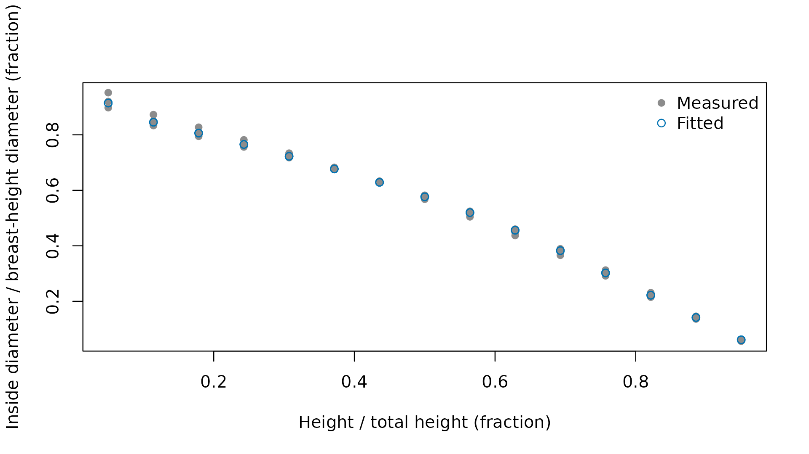

Taper equations supply the diameter profiles and section measurements used by merchandising. Select a shipped equation when its species scope and required inputs fit the tree measurements, or fit coefficients to measured stems when a local relationship is needed. Public tree measurements use inches and feet, including calls that evaluate a fitted equation stored on a metric coefficient scale.
Which equation families ship?
The shipped source equations come from the Forest Service National Volume Estimator Library. The source inventory records the files contributing each family, including the supporting routines used to select equations and measure profiles. Availability is determined by the implemented equation and its required measurements, rather than by the identifier’s appearance alone.
| family | source_files |
|---|---|
| Flewelling variable-shape profiles | f_west.f, f_ingy.f, f_alaska.f, f_other.f, sf_2pt.f, sf_2pth.f, sf_3pt.f, sf_3z.f, sf_corr.f, sf_dfz.f, sf_ds.f, sf_hs.f, sf_shp.f, sf_taper.f, sf_yhat.f, sf_yhat3.f, sf_zero.f |
| Clark source profiles | r8clkdib.f, r8dib.f, r8dib.inc, r8clkcoef.inc, r8cfo.inc, r8clist.inc, r8vlist.f, r8vlist.inc, r8init.f, r8prep.f, r8vol.f, r8vol1.f, r8vol2.f, r9clarkdib.f, r9clark.f, r9coeff.inc, r9init.f, r9vol.f, r9logs.f, clkcoef_mod.f, calcdia.f, ht2topd.f, profile.f, volinit.f, voleqdef.f |
| Alaska and Mathis source profiles | r10tap.f, r10tapo.f, r10d2h.f, r10vol.f, r10vol1.f, r10volo.f, r4d2h.f, r4vol.f, profile.f, calcdia.f, ht2topd.f |
| Smaller source profile families | r1tap.f, r2tap.f, r5tap.f, r12tap.f, stump.f, blmtap.f, blmvol.f, formclas.f, r6vol3.f |
| National scale volume and biomass profiles | nsvb.f, tables1.inc through tables11.inc, dist_ecoprov.inc, regndftdata.inc, scrib.f |
| Identifier and merchandising support | voleqdef.f, fiaeq2nveleq.for, mrules.f |
The identifier and merchandising support family draws on voleqdef.f, fiaeq2nveleq.for, mrules.f, the source files listed for equation selection and cutting rules.
Source identifiers have family-specific field layouts. The following table separates an identifier stored with the example trees and a national identifier into their actual fields. Treat these as recorded identifiers, not names to edit when changing a species assignment.
| layout | field | positions | value |
|---|---|---|---|
| source profile | geographic equation selection | 1:3 | F00 |
| source profile | equation mnemonic | 4:6 | FW2 |
| source profile | family-specific variant | 7 | W |
| source profile | species suffix | 8:10 | 202 |
| national scale | system marker | 1:3 | NVB |
| national scale | mountain indicator or zero | 4 | 0 |
| national scale | ecological division | 5:7 | 210 |
| national scale | species suffix | 8:10 | 202 |
The stored profile’s species suffix is 202, matching the species code in that identifier. The national identifier NVB0210202 combines the system marker, mountain indicator, ecological division, and species suffix shown in the table.
Which compatibility behavior is used?
The default port setting follows the public profile and
the calculated quantities where source routines have inconsistent
branches or unassigned outputs. The nvel setting reproduces
the listed source behavior. This option is separate from choosing a
taper equation, and affects the specific calculations in the comparison
table.
## Attach the calculation and data tools
library(merchandiser)
library(dplyr)
## Inspect the active compatibility choice
getOption(x = 'merchandiser.compat', default = 'port')
#> [1] "port"| area | port | nvel |
|---|---|---|
| Inventory-code geographic substitution (fiaeq2nveleq.for) | applies the intended trimmed geographic substitutions | reproduces fixed-width source string semantics |
| Flewelling SF_HS inverse | inverts the displayed profile and selects its highest crossing | reproduces the source bark-height argument and crossing selection |
| Clark 834CLKE110 inverse | returns the highest actual crossing | reproduces the source two-root addition |
| Clark R9LOGS error 12 | retains a computable total in the internal volume record | reproduces the source error and cleared record |
| R10 height selection and cedar equality | inverts the registered profile consistently | retains source height results and the cedar equality rule |
| Smaller-family inverse search | returns the precise numeric crossing | reproduces the source rounded search |
| R12 height selection | inverts the public profile | retains the source result for an unselected calculation |
| National scale CALCDIA outside-bark diameter | returns the outside-bark diameter computed internally | reproduces the unassigned source output slot |
| National scale Table S10 carbon fraction | returns the fraction used by the biomass calculation | returns the raw source-table fraction |
The Clark inverse entry selects the highest actual crossing in
port, while nvel reproduces the source’s
addition of two roots. The distinction affects the height returned for
that source profile, rather than its species assignment.
How closely does the package match the pinned source?
The agreement table compares saved single and double precision source results with package calculations. Each row reports the comparison count, the number within tolerance, the largest relative difference, and the count of excluded rows. These tolerances apply to the specified output and compatibility setting, not to every equation as a single blanket accuracy claim.
## Identify the source revision used for agreement fixtures
nvel_source_revision()
#> [1] "38548071d5aa652bb90c7f111f86b427f798a1c9"
#> attr(,"upstream_url")
#> [1] "https://github.com/FMSC-Measurements/VolumeLibrary"
#> attr(,"fixtures_release_tag")
#> [1] "v0.1.0"| precision | compat |
|---|---|
| double | nvel |
| double | port |
| single | nvel |
| single | port |
The double entries retain both compatibility settings,
so precision alone does not identify the calculation being compared.
Excluded rows and their reasons are listed in
inst/extdata/oracle-agreement.csv, shipped with the
package.
| family | output | precision | compat | rows compared (count) | rows within tolerance (count) | maximum relative difference (ratio) | tolerance (ratio) | excluded rows (count) |
|---|---|---|---|---|---|---|---|---|
| behre_taper | diameter inside bark | double | port | 1780 | 1780 | 2.91e-16 | 2.00e-12 | 0 |
| behre_taper | diameter inside bark | single | port | 1780 | 1780 | 1.74e-07 | 3.00e-04 | 0 |
| behre_taper | height at inside bark diameter | double | nvel | 1323 | 1323 | 0.00e+00 | 4.00e-05 | 214 |
| behre_taper | height at inside bark diameter | single | nvel | 1323 | 1323 | 4.83e-08 | 2.00e-03 | 214 |
| blm_taper | diameter inside bark | double | port | 30106 | 30106 | 3.53e-16 | 2.00e-12 | 0 |
| blm_taper | diameter inside bark | single | port | 30106 | 30106 | 2.01e-07 | 3.00e-04 | 0 |
| blm_taper | height at inside bark diameter | double | nvel | 22683 | 22683 | 0.00e+00 | 4.00e-05 | 3441 |
| blm_taper | height at inside bark diameter | single | nvel | 22683 | 22683 | 4.83e-08 | 2.00e-03 | 3441 |
| clark_r8 | diameter inside bark | double | port | 1478303 | 1478303 | 1.11e-14 | 2.00e-04 | 526422 |
| clark_r8 | diameter inside bark | single | port | 1478303 | 1478303 | 9.08e-05 | 3.00e-04 | 526422 |
| clark_r8 | height at inside bark diameter | double | nvel | 4 | 4 | 0.00e+00 | 4.00e-05 | 1739061 |
| clark_r8 | height at inside bark diameter | single | nvel | 4 | 4 | 1.50e-06 | 2.00e-03 | 1739061 |
| clark_r8 | height at inside bark diameter | double | port | 1163439 | 1163439 | 2.20e-15 | 4.00e-05 | 575626 |
| clark_r8 | height at inside bark diameter | single | port | 1163439 | 1163439 | 1.34e-04 | 2.00e-03 | 575626 |
| clark_r8 | stump cubic volume | double | port | 600721 | 600721 | 7.98e-16 | 1.00e-12 | 268935 |
| clark_r8 | stump cubic volume | single | port | 600738 | 600738 | 1.84e-03 | 2.00e-03 | 268918 |
| clark_r8 | total cubic volume | double | port | 652388 | 652388 | 0.00e+00 | 1.00e-12 | 217268 |
| clark_r8 | total cubic volume | single | port | 652388 | 652388 | 0.00e+00 | 2.00e-03 | 217268 |
| clark_r9 | diameter inside bark | double | port | 621260 | 621260 | 4.03e-16 | 2.00e-04 | 0 |
| clark_r9 | diameter inside bark | single | port | 621249 | 621249 | 2.75e-04 | 3.00e-04 | 11 |
| clark_r9 | height at inside bark diameter | double | port | 539010 | 539010 | 2.72e-15 | 4.00e-05 | 17 |
| clark_r9 | height at inside bark diameter | single | port | 539010 | 539010 | 7.61e-05 | 2.00e-03 | 17 |
| clark_r9 | R9LOGS error 12 | double | nvel | 7262 | 7262 | 0.00e+00 | 0.00e+00 | 262156 |
| clark_r9 | R9LOGS error 12 | single | nvel | 7262 | 7262 | 0.00e+00 | 0.00e+00 | 262156 |
| clark_r9 | stump cubic volume | double | port | 262156 | 262156 | 2.11e-15 | 1.00e-12 | 7262 |
| clark_r9 | stump cubic volume | single | port | 261766 | 261766 | 5.40e-04 | 2.00e-03 | 7652 |
| clark_r9 | total cubic volume | double | port | 262156 | 262156 | 0.00e+00 | 1.00e-12 | 7262 |
| clark_r9 | total cubic volume | single | port | 262133 | 262133 | 1.48e-03 | 2.00e-03 | 7285 |
| FIAEQ2NVELEQ | short geographic substitution | double | nvel | 5 | 5 | 0.00e+00 | 0.00e+00 | 0 |
| flewelling_2pt | diameter inside bark | double | port | 128415 | 128415 | 1.95e-13 | 2.00e-04 | 7968 |
| flewelling_2pt | diameter inside bark | single | port | 128415 | 128415 | 2.00e-04 | 3.00e-04 | 7968 |
| flewelling_2pt | diameter outside bark | double | port | 128415 | 128415 | 1.50e-04 | 2.00e-04 | 7968 |
| flewelling_2pt | diameter outside bark | single | port | 128415 | 128415 | 1.85e-04 | 3.00e-04 | 7968 |
| flewelling_2pt | height at inside bark diameter | double | nvel | 11525 | 11525 | 1.00e-08 | 4.00e-05 | 106776 |
| flewelling_2pt | height at inside bark diameter | single | nvel | 11520 | 11520 | 1.88e-03 | 2.00e-03 | 106781 |
| flewelling_2pt | height at inside bark diameter | double | port | 99822 | 99822 | 2.18e-05 | 4.00e-05 | 18479 |
| flewelling_2pt | height at inside bark diameter | single | port | 99822 | 99822 | 1.26e-03 | 2.00e-03 | 18479 |
| flewelling_2pt | stump cubic volume | double | port | 14416 | 14416 | 2.59e-15 | 1.00e-12 | 1090 |
| flewelling_2pt | stump cubic volume | single | port | 14416 | 14416 | 3.58e-05 | 2.00e-03 | 1090 |
| flewelling_2pt | total cubic volume | double | port | 14416 | 14416 | 2.22e-16 | 1.00e-12 | 1090 |
| flewelling_2pt | total cubic volume | single | port | 14416 | 14416 | 3.55e-04 | 2.00e-03 | 1090 |
| flewelling_3pt | diameter inside bark | double | port | 37616 | 37616 | 2.08e-16 | 2.00e-04 | 2300 |
| flewelling_3pt | diameter inside bark | single | port | 37616 | 37616 | 1.06e-04 | 3.00e-04 | 2300 |
| flewelling_3pt | diameter outside bark | double | port | 37616 | 37616 | 0.00e+00 | 2.00e-04 | 2300 |
| flewelling_3pt | diameter outside bark | single | port | 37616 | 37616 | 0.00e+00 | 3.00e-04 | 2300 |
| flewelling_3pt | height at inside bark diameter | double | nvel | 23082 | 23082 | 3.73e-12 | 4.00e-05 | 11523 |
| flewelling_3pt | height at inside bark diameter | single | nvel | 23074 | 23074 | 1.75e-03 | 2.00e-03 | 11531 |
| flewelling_3pt | height at inside bark diameter | double | port | 6930 | 6930 | 7.92e-06 | 4.00e-05 | 27675 |
| flewelling_3pt | height at inside bark diameter | single | port | 6930 | 6930 | 1.26e-03 | 2.00e-03 | 27675 |
| flewelling_3pt | stump cubic volume | double | port | 3964 | 3964 | 1.04e-17 | 1.00e-12 | 0 |
| flewelling_3pt | stump cubic volume | single | port | 3964 | 3964 | 2.56e-05 | 2.00e-03 | 0 |
| flewelling_3pt | total cubic volume | double | port | 3964 | 3964 | 2.22e-16 | 1.00e-12 | 601 |
| flewelling_3pt | total cubic volume | single | port | 3964 | 3964 | 1.75e-03 | 2.00e-03 | 601 |
| nsvb | biomass, 30 values per row | double | port | 2936 | 2936 | 1.84e-14 | 2.00e-12 | 0 |
| nsvb | biomass, 30 values per row | single | port | 2936 | 2936 | 9.62e-04 | 1.00e-03 | 0 |
| nsvb | carbon fraction | double | nvel | 1 | 1 | 0.00e+00 | 0.00e+00 | 0 |
| nsvb | diameter inside bark | double | port | 26755 | 26755 | 0.00e+00 | 2.00e-04 | 0 |
| nsvb | diameter inside bark | single | port | 26755 | 26755 | 5.86e-07 | 3.00e-04 | 0 |
| nsvb | diameter outside bark | double | nvel | 26755 | 26755 | 0.00e+00 | 0.00e+00 | 0 |
| nsvb | diameter outside bark | single | nvel | 26755 | 26755 | 0.00e+00 | 0.00e+00 | 0 |
| nsvb | height at inside bark diameter | double | port | 26476 | 26476 | 0.00e+00 | 4.00e-05 | 279 |
| nsvb | height at inside bark diameter | single | port | 26476 | 26476 | 2.03e-04 | 2.00e-03 | 279 |
| nsvb | stump cubic volume | double | port | 2523 | 2523 | 0.00e+00 | 1.00e-12 | 0 |
| nsvb | stump cubic volume | single | port | 2523 | 2523 | 5.21e-06 | 2.00e-03 | 0 |
| nsvb | tip cubic volume | double | port | 2523 | 2523 | 0.00e+00 | 1.00e-12 | 0 |
| nsvb | tip cubic volume | single | port | 2523 | 2523 | 2.53e-05 | 2.00e-03 | 0 |
| nsvb | total cubic volume | double | port | 2523 | 2523 | 0.00e+00 | 1.00e-12 | 0 |
| nsvb | total cubic volume | single | port | 2523 | 2523 | 5.04e-07 | 2.00e-03 | 0 |
| r1_taper | diameter inside bark | double | port | 5119 | 5119 | 0.00e+00 | 2.00e-12 | 205 |
| r1_taper | diameter inside bark | single | port | 5119 | 5119 | 7.57e-07 | 3.00e-04 | 205 |
| r1_taper | height at inside bark diameter | double | nvel | 2625 | 2625 | 9.08e-06 | 4.00e-05 | 1998 |
| r1_taper | height at inside bark diameter | single | nvel | 2625 | 2625 | 9.75e-06 | 2.00e-03 | 1998 |
| r1_taper | stump cubic volume | double | port | 592 | 592 | 0.00e+00 | 1.00e-12 | 0 |
| r1_taper | stump cubic volume | single | port | 592 | 592 | 6.80e-07 | 2.00e-03 | 0 |
| r1_taper | total cubic volume | double | port | 592 | 592 | 2.20e-16 | 1.00e-12 | 0 |
| r1_taper | total cubic volume | single | port | 592 | 592 | 7.11e-08 | 2.00e-03 | 0 |
| r10_taper | cedar equality height at inside bark diameter | double | nvel | 2 | 2 | 0.00e+00 | 1.00e-10 | 0 |
| r10_taper | cedar equality height at inside bark diameter | single | nvel | 2 | 2 | 5.25e-07 | 1.00e-03 | 0 |
| r10_taper | diameter inside bark | double | port | 19499 | 19499 | 5.05e-15 | 1.00e-12 | 14170 |
| r10_taper | diameter inside bark | single | port | 19499 | 19499 | 3.08e-06 | 5.00e-06 | 14170 |
| r10_taper | height at inside bark diameter | double | nvel | 3833 | 3833 | 0.00e+00 | 0.00e+00 | 25354 |
| r10_taper | height at inside bark diameter | single | nvel | 3833 | 3833 | 0.00e+00 | 0.00e+00 | 25354 |
| r10_taper | height at inside bark diameter | double | port | 13068 | 13068 | 5.62e-12 | 1.00e-10 | 16119 |
| r10_taper | height at inside bark diameter | single | port | 13068 | 13068 | 9.54e-04 | 1.00e-03 | 16119 |
| r10_taper | stump cubic volume | double | port | 994 | 994 | 9.75e-16 | 1.00e-12 | 2850 |
| r10_taper | stump cubic volume | single | port | 1700 | 1700 | 1.07e-03 | 2.00e-03 | 2144 |
| r10_taper | total cubic volume | double | port | 3194 | 3194 | 2.99e-16 | 1.00e-12 | 650 |
| r10_taper | total cubic volume | single | port | 3194 | 3194 | 2.84e-07 | 2.00e-03 | 650 |
| r12_taper | diameter inside bark | double | port | 3547 | 3547 | 0.00e+00 | 2.00e-12 | 0 |
| r12_taper | diameter inside bark | single | port | 3547 | 3547 | 9.27e-08 | 3.00e-04 | 0 |
| r12_taper | height at inside bark diameter | double | nvel | 3074 | 3074 | 0.00e+00 | 4.00e-05 | 0 |
| r12_taper | height at inside bark diameter | single | nvel | 3074 | 3074 | 0.00e+00 | 2.00e-03 | 0 |
| r2_taper | diameter inside bark | double | port | 7075 | 7075 | 2.63e-15 | 2.00e-12 | 7086 |
| r2_taper | diameter inside bark | single | port | 7075 | 7075 | 3.16e-07 | 3.00e-04 | 7086 |
| r2_taper | height at inside bark diameter | double | nvel | 6150 | 6150 | 0.00e+00 | 4.00e-05 | 6147 |
| r2_taper | height at inside bark diameter | single | nvel | 6150 | 6150 | 4.94e-08 | 2.00e-03 | 6147 |
| r2_taper | stump cubic volume | double | port | 804 | 804 | 0.00e+00 | 1.00e-12 | 808 |
| r2_taper | stump cubic volume | single | port | 804 | 804 | 3.26e-07 | 2.00e-03 | 808 |
| r2_taper | total cubic volume | double | port | 804 | 804 | 2.22e-16 | 1.00e-12 | 808 |
| r2_taper | total cubic volume | single | port | 804 | 804 | 7.17e-08 | 2.00e-03 | 808 |
| r4_driver | diameter inside bark | double | port | 17678 | 17678 | 1.26e-15 | 1.00e-12 | 0 |
| r4_driver | diameter inside bark | single | port | 17678 | 17678 | 1.15e-06 | 5.00e-06 | 0 |
| r4_driver | height at inside bark diameter | double | port | 15211 | 15211 | 4.80e-12 | 1.00e-10 | 125 |
| r4_driver | height at inside bark diameter | single | port | 15209 | 15209 | 1.49e-04 | 1.00e-03 | 127 |
| r4_driver | stump cubic volume | double | port | 2012 | 2012 | 0.00e+00 | 1.00e-12 | 0 |
| r4_driver | stump cubic volume | single | port | 2012 | 2012 | 3.14e-07 | 2.00e-03 | 0 |
| r4_driver | total cubic volume | double | port | 2012 | 2012 | 3.70e-16 | 1.00e-12 | 0 |
| r4_driver | total cubic volume | single | port | 2012 | 2012 | 3.80e-07 | 2.00e-03 | 0 |
| r5_taper | diameter inside bark | double | port | 15950 | 15950 | 0.00e+00 | 2.00e-12 | 20 |
| r5_taper | diameter inside bark | single | port | 15950 | 15950 | 2.34e-06 | 3.00e-04 | 20 |
| r5_taper | height at inside bark diameter | double | nvel | 13856 | 13856 | 0.00e+00 | 4.00e-05 | 0 |
| r5_taper | height at inside bark diameter | single | nvel | 13856 | 13856 | 4.94e-08 | 2.00e-03 | 0 |
| r5_taper | stump cubic volume | double | port | 1810 | 1810 | 0.00e+00 | 1.00e-12 | 0 |
| r5_taper | stump cubic volume | single | port | 1810 | 1810 | 1.45e-07 | 2.00e-03 | 0 |
| r5_taper | total cubic volume | double | port | 1810 | 1810 | 2.21e-16 | 1.00e-12 | 0 |
| r5_taper | total cubic volume | single | port | 1810 | 1810 | 7.06e-08 | 2.00e-03 | 0 |
The clark_r8 family has the most rows compared in a table entry, with 1478303 rows and a maximum relative difference of 1.11e-14. Full source fixtures are supplied separately to the test suite, which enforces their tolerances and exclusion counts.
How is a local relationship fitted?
fit_taper() accepts repeated measurements identified by
tree, with constant breast-height diameter and total height within each
tree. The shipped measurements are synthetic profiles derived from the
example trees. They demonstrate fitting inputs and diagnostics without
representing a field calibration sample.
## Retain the measured fields required for fitting
measurements <- example_stem_measurements %>%
filter(spcd == 202) %>%
select(tree_id, dbh, ht, h, dib, spcd)| form | source | structure |
|---|---|---|
| kozak_1988 | Kozak (1988), doi:10.1139/x88-213 | Variable exponent with reference point |
| kozak_2002 | Kozak (2004), doi:10.5558/tfc80507-4 | Variable exponent with tree and height terms |
| max_burkhart | Max and Burkhart (1976), doi:10.1093/forestscience/22.3.283 | Segmented polynomial with fitted join points |
The max_burkhart row specifies a segmented polynomial
with fitted join points. These forms ship as fitting relationships,
without a supplied set of published local coefficients.
## Fit a segmented profile to the selected measured stems
fit <- fit_taper(tree_id = measurements$tree_id,
dbh = measurements$dbh,
ht = measurements$ht,
h = measurements$h,
dib = measurements$dib,
spcd = measurements$spcd,
form = 'max_burkhart')| measurements (count) | root mean squared error (inches) | mean residual (inches) |
|---|---|---|
| 45 | 0.153 | 0.003 |
The fitted profile has a root mean squared diameter error of 0.153 inches on the retained measurements. Residual diagnostics preserve measurement identifiers and physical units for examining departures along the stem.
## Compare observed and fitted relative diameters
plot(fit)
The figure compares 45 measured diameters with fitted values at the same relative heights. It describes the fitting observations, without a separate validation sample.
Measured and fitted diameter ratios
| tree_id | height / total height | observed diameter / breast-height diameter | fitted diameter / breast-height diameter |
|---|---|---|---|
| 1 | 0.0500 | 0.9519 | 0.9146 |
| 1 | 0.1143 | 0.8726 | 0.8453 |
| 1 | 0.1786 | 0.8273 | 0.8062 |
| 1 | 0.2429 | 0.7818 | 0.7653 |
| 1 | 0.3071 | 0.7338 | 0.7224 |
| 1 | 0.3714 | 0.6825 | 0.6770 |
| 1 | 0.4357 | 0.6273 | 0.6287 |
| 1 | 0.5000 | 0.5679 | 0.5766 |
| 1 | 0.5643 | 0.5045 | 0.5198 |
| 1 | 0.6286 | 0.4371 | 0.4562 |
| 1 | 0.6929 | 0.3661 | 0.3828 |
| 1 | 0.7571 | 0.2919 | 0.3024 |
| 1 | 0.8214 | 0.2151 | 0.2221 |
| 1 | 0.8857 | 0.1364 | 0.1417 |
| 1 | 0.9500 | 0.0565 | 0.0614 |
| 3 | 0.0500 | 0.9200 | 0.9146 |
| 3 | 0.1143 | 0.8497 | 0.8453 |
| 3 | 0.1786 | 0.8081 | 0.8062 |
| 3 | 0.2429 | 0.7668 | 0.7653 |
| 3 | 0.3071 | 0.7247 | 0.7224 |
| 3 | 0.3714 | 0.6795 | 0.6770 |
| 3 | 0.4357 | 0.6298 | 0.6287 |
| 3 | 0.5000 | 0.5747 | 0.5766 |
| 3 | 0.5643 | 0.5142 | 0.5198 |
| 3 | 0.6286 | 0.4483 | 0.4562 |
| 3 | 0.6929 | 0.3774 | 0.3828 |
| 3 | 0.7571 | 0.3020 | 0.3024 |
| 3 | 0.8214 | 0.2230 | 0.2221 |
| 3 | 0.8857 | 0.1412 | 0.1417 |
| 3 | 0.9500 | 0.0578 | 0.0614 |
| 5 | 0.0500 | 0.8977 | 0.9146 |
| 5 | 0.1143 | 0.8334 | 0.8453 |
| 5 | 0.1786 | 0.7947 | 0.8062 |
| 5 | 0.2429 | 0.7563 | 0.7653 |
| 5 | 0.3071 | 0.7178 | 0.7224 |
| 5 | 0.3714 | 0.6777 | 0.6770 |
| 5 | 0.4357 | 0.6330 | 0.6287 |
| 5 | 0.5000 | 0.5821 | 0.5766 |
| 5 | 0.5643 | 0.5245 | 0.5198 |
| 5 | 0.6286 | 0.4601 | 0.4562 |
| 5 | 0.6929 | 0.3892 | 0.3828 |
| 5 | 0.7571 | 0.3125 | 0.3024 |
| 5 | 0.8214 | 0.2310 | 0.2221 |
| 5 | 0.8857 | 0.1460 | 0.1417 |
| 5 | 0.9500 | 0.0589 | 0.0614 |
The first observed diameter is 0.9519 times its tree’s breast-height diameter, matching the first measured profile point.
## Predict diameters at the measured heights
predicted <- measurements %>%
mutate(fitted_dib = predict(object = fit, newdata = measurements))| tree_id | breast-height diameter (inches) | total height (feet) | measurement height (feet) | measured diameter (inches) | species code | fitted diameter (inches) |
|---|---|---|---|---|---|---|
| 1 | 12 | 60 | 3.000 | 11.423 | 202 | 10.975 |
| 1 | 12 | 60 | 6.857 | 10.472 | 202 | 10.144 |
| 1 | 12 | 60 | 10.714 | 9.927 | 202 | 9.674 |
| 1 | 12 | 60 | 14.571 | 9.381 | 202 | 9.184 |
| 1 | 12 | 60 | 18.429 | 8.806 | 202 | 8.669 |
The first prediction is 10.975 inches at the first recorded measurement height. The returned values can be joined to other measurement attributes through the retained tree identifier and height.
With several groups, group requests a mixed effects fit.
Its random effect acts on the segmented form’s slope parameter or the
Kozak scale parameter. Prediction for an unseen group uses population
coefficients. summary() returns coefficient and fit
summaries, and predict() returns inside bark diameters in
inches for supplied measurements.
How does the fit become a usable equation?
as_taper_model() retains the population coefficients and
fitted species scope. The private identifier must contain a dot, which
separates it from source identifiers. An explicit bark ratio enables
outside bark calculations where the fitted form itself provides only
inside bark diameter.
## Create a local model with an explicit bark ratio
local_model <- as_taper_model(x = fit,
model = 'local.douglas_fir',
bark_ratio = 0.9)
## Inspect the stored coefficient scale
print(local_model)
#> <taper_model local.douglas_fir>
#> form: max_burkhart
#> kernel: compiled
#> units: metric
#> oracle verified: not applicable
#> capabilities: dob, inverse, integralThe fitted model stores coefficients in metric units, as its print shows, while public calls continue to accept and return inches and feet.
## Register the model for this session
register_taper_model(x = local_model)
## Check its availability and species scope
check_taper_models(model = local_model$id, spcd = measurements$spcd)
#> [1] row id status problem input
#> <0 rows> (or 0-length row.names)The check returns no problem rows for the fitted species scope. It checks model availability and input requirements, not fit accuracy.
## Measure an inside bark diameter through the public interface
local_diameter <- dib(dbh = tree$dbh,
ht = tree$ht,
h = 20,
spcd = tree$spcd,
model = local_model$id)| diameter (inches) | status |
|---|---|
| 15.856 | 0 |
At the supplied height in feet, the fitted model returns 15.856 inches inside bark. No manual conversion of the input tree measurements is needed.
What should be retained for later use?
The registry manifest records registered identifiers, contributing packages, and registration order. A package version is recorded for models registered by a package and is missing for a model registered from a script. It excludes coefficients and source identifiers resolved without explicit registration. Save the fit or coefficient vector separately when the relationship needs to be restored in another session.
## Record the local model's registry entry
manifest <- taper_manifest() %>%
filter(id == local_model$id)| id | owner_package | package_version | generation |
|---|---|---|---|
| local.douglas_fir | local | NA | 3204 |
The manifest identifies local.douglas_fir as the registered local equation. Its registration lasts only for the current session.
## Reconstruct a model directly from its metric coefficients
coefficient_model <- taper_model_from_coefficients(id = 'local.coefficients',
form = fit$form,
coefficients = fit$coefficients,
spcd = fit$spcd)
## Inspect the reconstructed model identifier
coefficient_model$id
#> [1] "local.coefficients"
## Remove the example's session registration
unregister_taper_model(model = local_model$id)The reconstructed object retains the equation form and coefficient scale without registering it automatically. The model constructor supports existing diameter functions when coefficients alone do not describe the implementation.